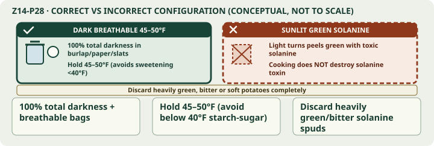

Z14-P28 · Food production and preservation · New manuscript
Keep stored potatoes dark and discard green or bitter potatoes
Maintain firm, tasty winter potatoes while preventing light-induced glycoalkaloid (solanine) toxicity and cold-induced sweetening.
When it applies · Home-grown and bulk-purchased potatoes stored for weeks to months.
Equipment · Breathable opaque containers (burlap sacks, slatted dark wooden crates, paper bags), dark cool room (45–50°F), and thermometer.

Actions
- Store sound potatoes in a cool, dark place with airflow using crop-specific Extension guidance. Light exposure can cause greening, which flags possible glycoalkaloid risk.[P05, P21]
- Discard green, bitter or heavily sprouted potatoes. Color is a warning cue rather than a measurement of toxin concentration. Do not taste a suspect potato to test it.[P21]
- Check stored potatoes periodically and remove deteriorated ones. Discard green, bitter or strongly sprouted tubers without tasting them.[P21]
Failure recognition · Storing a bulk sack of potatoes in clear plastic bags beside a sunny basement window, turning half the tubers bright green and toxic.[P05, M15]
Verify · Confirm darkness, suitable airflow and periodic inspection for deterioration.[P05, P21]
Stop or change course · Discard green, bitter, rotten or strongly sprouted potatoes. Do not assess safety by tasting.[P21]
Evidence and editorial notes
- M15 · National Capital Poison Center · First Aid for Poisonings (Current web edition)
- Section: First aid for swallowed, inhaled, skin and eye exposure; when to call 911 · Conditions: Suspected poisoning in the U.S.
Support: For collapse, seizure, breathing trouble or inability to wake call 911. Otherwise get timely poison-center advice. Do not induce vomiting.
Limitations: Substance and route determine immediate care. Keep rescuers away from contaminated scenes. · Conflicting evidence: See A02 claim audit for boundaries.
Editorial note: Separates 911 life-threat activation from Poison Control guidance. · Specialist reviewer: Medical toxicology and poison control
Primary source · checked 2026-11-25 - P05 · University of Minnesota Extension · Harvesting and Storing Home Garden Vegetables (current web edition)
- Section: Root-Cellar and Cold-Storage Temperature/Humidity Zones · Conditions: Basements, root cellars, unheated porches, and insulated cold bins
Support: Match stored produce to distinct storage regimes: cold-moist (32–40°F, high humidity for carrots/beets/cabbage), cool-moist (45–50°F for potatoes), cold-dry (32–35°F dry for onions/garlic), and cool-dry (50–55°F dry for winter squash); separate ethylene-producing apples from sensitive vegetables.
Limitations: Storing potatoes below 40°F converts starch to sugar; freezing temperatures ruin unhardened stored roots. · Conflicting evidence: None; prevents treating one basement temperature as universal for all crops.
Editorial note: Core root-cellar zoning and monitoring evidence in Z14. · Specialist reviewer: Post-harvest horticulture and food storage
Primary source · checked 2026-11-24 - P21 · German Federal Institute for Risk Assessment · Glycoalkaloids in potatoes: consumer and storage guidance (2018)
- Section: Consumer recommendations on storage and preparation · Conditions: Potato tubers, including green, bitter or strongly sprouting examples
Support: Store potatoes away from light and discard unsuitable green or strongly sprouting tubers and bitter dishes.
Limitations: Appearance and greening cannot quantify glycoalkaloids or establish safe intake. · Conflicting evidence: See A02 claim audit for boundaries.
Editorial note: Added in A02 to separate a consequential source boundary. · Specialist reviewer: Extension and food toxicology
Primary source · checked 2026-11-25
Source lineage · UMN Extension Harvesting and Storing Vegetables; new manuscript · Classification · New manuscript.